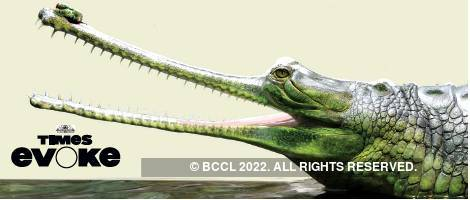

| Class | Order | Family |
|---|---|---|
| Reptilia | Crocodylia | Gavialidae |
Snout is very elongated and narrow. Maximum size is 6.5 m, and female is about 4.5 m. The dorsal part is olive or light brown, and the ventral part is pale. Young are light colored and spotted or black cross barred. Each side of the jaw consists of more than two dozen of interlocking teeth. Fingers and toes are partially webbed. The tail is laterally flattened. A distinctive knob present at the tip of the snout in adult male. It helps to produce loud noise during social behavior. It also helps to produce bubbles during courtship
এদের মুখ (Snout) খুব দীর্ঘায়িত এবং সরু। সর্বাধিক আকার ৬.৫ মিটার, এবং মহিলা প্রায় ৪.৫ মিটার হয়। পৃষ্ঠীয় অংশ জলপাই বা হালকা বাদামী এবং পেটের অংশ ফ্যাকাশে হলুদ রঙের। অল্পবয়সীরা হালকা রঙের এবং ফোঁটা ফোঁটা কালো দাগযুক্ত বা আড়াআড়ি কালো দাগযুক্ত। চোয়ালের প্রতিটি পাশে দুই ডজনের বেশি দাঁত থাকে। দুদিগের দাঁতগুলো একে অপরের সাথে লেগে থাকে। আঙ্গুল এবং পায়ের আঙ্গুলগুলি আংশিকভাবে লেপ্টানো (webbed)। লেজ পার্শ্বীয়ভাবে চ্যাপ্টা হয়। প্রাপ্তবয়স্ক পুরুষের স্নাউটের ডগায় ঘড়া বা থলে থাকে। এটির সামাজিক আচরণের সময় উচ্চ শব্দ তৈরি করে। এছাড়া এটার সাহায্যে প্রজননের সময় বুদ বুদ তৈরি করে স্ত্রীদের আকর্ষণ করে।
This globally critically endangered species usually lives in deep and fast flowing river. They are poorly adapted for locomotion on land. Adult is entirely fish eater, but also eat frog and insects. They have also known to scavenge. Female become sexually mature over 10 years old. They build a nest on the river bank, and the female lays 30-50 eggs; incubation period is about 62 days. Males guard a harem of several females. Only 200 reproductive individuals are believed to exist in the wild.
এই বিশ্বব্যাপী মহাবিপন্ন প্রজাতিটি সাধারণত গভীর এবং দ্রুত প্রবাহিত নদীতে বাস করে। এরা তেমনভাবে মাটিতে চালচলনের করতে পারে না। প্রাপ্তবয়স্করা সম্পূর্ণভাবে মাছ খায়, তবে ব্যাঙ এবং পোকামাকড়ও খেতে পারে। তারা পঁচা গলা আবর্জনা (scavenge) খেতে জানে। মহিলা ১০ বছরের বেশি বয়সে যৌনভাবে পরিণত হয়। তারা নদীর তীরে বাসা বানায় এবং স্ত্রী ঘড়িয়াল ৩০-৫০ টি ডিম পাড়ে; ডিম ফুটে ছানা বের হতে সময় লাগে প্রায় ৬২ দিন। একটি পুরুষ বেশ কয়েকটি স্ত্রী নিয়ে থাকে এবং অন্য পুরুষ থেকে এদের পাহারা দায়। বুনো পরিবেশে মাত্র ২০০টি প্রজনন সক্ষম ঘড়িয়াল বেচে রয়েছে।
Bangladesh, Bhutan, Myanmar, India, Nepal, Pakistan
বাংলাদেশ, ভুটান, মায়ানমার, ভারত, নেপাল, পাকিস্তান
Brahmaputra, Jamuna, Padma, Mahananda.
ব্রহ্মপুত্র, যমুনা, পদ্মা, মহানন্দা।